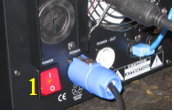
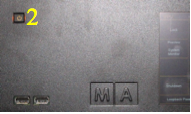

| Caution: Do not power down during booting. Such a switch-off may lead to corruption of the solid state disk files. |
|
| Power connector |  |
| AC power switch on the rear panel (1) | |
| Position I = ON | |
| In the I position, the instrument is in standby mode or in operation, depending on the position of the ON/STANDBY key at the front panel. |
|
| Note: | |
| The AC power switch may remain ON continuously. | |
| Switching to OFF is only required when the instrument must be completely removed from the AC power source. |
|
| Position O = OFF | |
| The 0 position implies an all-pole disconnection of the instrument from the AC power source. |
|
| Standby switch |  |
| ON/STANDBY button on the front panel (2) |
|
| The ON/STANDBY switch activates two different operating Modes: |
|
| Operation ON - | |
| First push on ON/STANDBY - button | |
| The apparatus starts booting. | |
| STANDBY - | |
| Second push on ON/STANDBY - button | |
| The apparatus switch to standby - mode | |
| Caution: In standby mode, the AC power voltage is present within the apparatus |
Switching On the Instrument
In order to switch on the apparatus, set the power switch on the rear panel to position I. Set the apparatus to operating mode by pressing the ON/STANDBY button on the front panel.
Switching Off the Instrument
In order to switch off the apparatus, tap Shutdown at the interal display of a MA VPU Plus or go to File Exit at the GUI of the MA VPU. In this standby mode, the AC power voltage is present within the instrument. For longer non use switch the power switch to “0”
Cleaning
The VPU demands only minor attention. Clean the surface only with dry soft cloth and look for proper condition of ventilation. Do not use any liquid cleaner or compressed air.